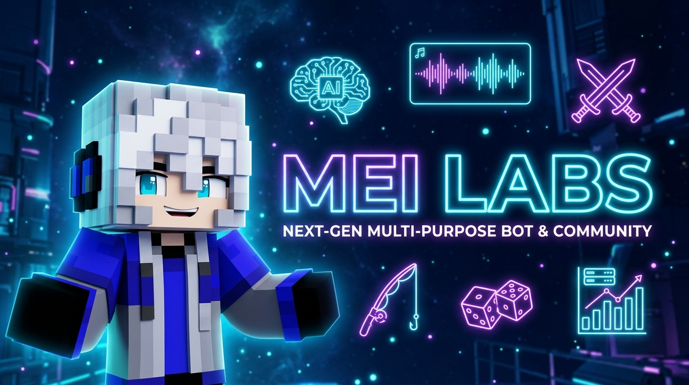

MEI LABS AI ASSISTANT
Asisten virtual cerdas & ekosistem all-in-one komunitas Discord bertenaga Micro-Kernel Hot-Swap, Gemini 2.0 AI, Voice AI Companion di Voice Channel, siaran 24/7 Live Radio, dan jembatan TCP RCON Realm Minecraft.

Fondasi Rekayasa Kelas Enterprise
Dibangun dengan arsitektur micro-kernel independen untuk memastikan latensi mendekati 0ms, fault-isolation, dan performa tanpa henti.
Micro-Kernel Hot-Swap & Async Worker Thread Pool
Komputasi berat seperti rendering Canvas Rank Card, transformasi matriks pose 3D, dan pemindaian ReDoS Regex sepenuhnya dialihkan ke Worker Thread Pool multi-threading terpisah. Seluruh modul dapat di-reload secara langsung (Hot-Reload) tanpa restart bot dan tanpa memutus pemutaran audio di voice channel.
Conversational Voice AI
Ajak asisten AI Mei mengobrol dan berbicara langsung dengan suara audio natural di dalam Voice Channel Discord lewat !voiceai.
24/7 Live Radio Stations
Siaran radio internet live non-stop 1-klik dengan 6 preset stasiun: Lofi Girl, Anime OST, Nightcore Beats, Synthwave, dan Cafe Jazz.
Honeypot Anti-Raid Shield
Channel jebakan otomatis untuk mengeksekusi tindakan instan (Ban / Kick / Timeout) terhadap akun spammer dan bot penyerang.
Minecraft Studio & RCON
Sinkronisasi whitelist server Minecraft via TCP Source RCON murni serta 3D WebGL 60FPS Skin Studio dengan 80+ pose dinamis.
Seasonal Leaderboard
Sistem klasemen musiman kompetitif dengan countdown otomatis, hadiah juara (*Season Champion*), dan galeri abadi *Hall of Fame*.
Autonomous Self-Healing
Engine diagnostik AI otonom di level Node.js runtime yang memulihkan koneksi MongoDB, Lavalink, dan gateway dalam <1000ms.
Simulasi Obrolan Langsung Persona Mei
Ketik pertanyaan apa saja di terminal simulator ini untuk menguji kecerdasan alami, wawasan perintah bot, dan respon ramah Mei.
Pusat Stasiun Radio & Musik HQ
Nikmati pemutaran audio lossless 320kbps tanpa jeda dengan 3 node Lavalink redundancy dan 6 stasiun radio siaran langsung.
☕ Lofi Girl 24/7 — Beats to Relax / Study
Mendukung !radio lofi, !radio anime, !radio nightcore, !radio synthwave, !radio jazz.
Eksplorasi 246+ Perintah Lengkap
Seluruh perintah bot mendukung Dual-Execution (Prefix Klasik ! dan Slash Command Discord /).